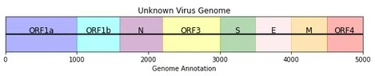

12 The Novel Pathogen
⬜ Developing Hypotheses
⬜ Sample Collection
⬜ Outbreak Investigation
⬜ Sequencing
🟩 Bioinformatics
⬜ Genomic Epidemiology
⬜ Public Health Implementation
Isolating and identifying the novel pathogen:
In mid-May after the team identified an unknown microorganism in the sample, the Microbiologists began working with the specimens collected from the bat trainers to isolate the suspect pathogen. After several weeks of meticulous labor, the Microbiologists were successfully able to isolate the unknown pathogen from both samples. Using the raw sequencing data, the Bioinformaticians were able to utilize their pipelines to piece together a genome from the samples taken from one of the bat trainers.
Since the pathogen was unknown and did not immediately match any existing organisms in the database, the team first performed de novo genome assembly, a process that constructs a genome without relying on a reference sequence. This involves stitching together overlapping sequencing reads to form a longer contiguous sequences (contigs). Contigs help us reconstruct longer sequences from smaller fragments, so that it is possible to construct a draft genome.
One assembled, the draft genome was analyzed against the Public Genome Database, a public repository of known microbial sequences. This process, known as taxonomic identification, compares the newly assembled genome against existing reference sequences to determine whether it shares homology or evolutionary similarity, with any known organisms. A match in the database suggests that the unknown pathogen may be related to a previously documented virus, providing clues about its classification and potential function.
Fortunately, the results came back with a hit, demonstrating that the genome belongs to a family of positive-sense RNA viruses called Pokeviridae.
The Bioinformaticians were able to identify a sequence in the Public Genome Database that appeared relatively similar to the genome they’ve assembled. Unfortunately, the metadata regarding this reference sequence is incomplete, as it is the only genome of its kind, and was assembled from genetic material taken from muutubats on June 14th of 2029. The muutubats are a species of fruit bats that shared a very recent common ancestor with the muubats and even live within the same geographic region. The Bioinformaticians decided to use the consensus genome of the virus taken from the muutubat as a reference genome.
With this reference in hand, the team needed to refine the assembled genome to ensure accuracy and reduce sequencing errors. To do this, they constructed a consensus genome, which uses a reference genome to provide mapping of the sequence. A consensus genome represents the most common nucleotide at each position across multiple sequencing reads. This approach is particularly useful in viral genomics, where individual sequencing reads may contain minor variations or technical errors.
By aligning all sequencing reads from the bat trainer samples to the newly identified reference genome, the Bioinformaticians were able to reconstruct a high-confidence sequence. This consensus genome provided a cleaner, more reliable representation of the viral genome, which would be crucial for downstream analyses, such as identifying mutations, inferring transmission patterns, and understanding functional differences in viral proteins.
Example illustrating a consensus sequence
| 1 | 2 | 3 | 4 | 5 | 6 | 7 | 8 | 9 | 10 | 11 | 12 | 13 | 14 | 15 | 16 | 17 | 18 | 19 | |
|---|---|---|---|---|---|---|---|---|---|---|---|---|---|---|---|---|---|---|---|
| Consensus | A | T | G | C | T | G | A | T | C | G | T | A | C | G | T | T | A | C | G |
| Read 1 | A | T | G | C | T | - | A | T | C | G | - | A | C | G | T | - | A | C | G |
| Read 2 | - | T | G | C | - | G | A | T | - | G | T | A | - | G | T | T | A | - | G |
| Read 3 | A | - | G | C | T | G | - | T | C | - | T | A | C | G | - | T | A | C | - |
| Read 4 | A | T | - | - | T | G | A | - | C | G | T | - | C | - | T | T | - | C | G |
| Read 5 | A | T | G | - | - | - | A | T | - | G | T | - | - | G | T | T | A | C | - |
The Bioinformaticians continued to work tirelessly to annotate the genome of the unknown virus, and fortunately were successful in mapping out most of the structural genes of the virus. Genome annotation is the process of identifying functional elements within the genomic sequencing, including protein-coding genes, regulatory regions, and other functional motifs. In viral genomics, this step is essential for understanding how the virus interacts with its hosts, replicates, and evades the immune system. Think of it as mapping out the information that is encoded in a genome; each chapter could represent a gene or open reading frame that codes for a protein.
To annotate the genome, the team used comparative genomics tools that compare the newly assembled viral genome to known sequences in public databases. By analyzing sequencing homology, they identified genes encoding four key structural proteins:
Nucleocapsid (N): responsible for packaging the viral RNA genome.
Spike (S): mediates viral entry into host cells. Due to its interaction with the host cell, the spike protein is often a frequent site of mutation or an evolutionary hotspot.
Envelope (E): involved in virus assembly and budding (the processes of putting the viral particles together to form a virus which would then leave the cell).
Matrix (M): maintains the structural integrity of the virus.
However, structural genes only make up a fraction of the viral genome. The team also needed to identify non-structural proteins (NSPs) encoded within the open reading frames, or regions of the genomes that code for multiple proteins. These NSPs often play crucial roles in viral replication, immune evasion, and host manipulation, but their exact functions require further investigations. Additional computational analyses would be needed to fully annotate these regions, such as functional domain prediction, which identifies specific regions within a protein that have known biological functions (e.g. enzyme activity or host interactions), and protein structure modeling, which predicts the three-dimensional shape of a protein, helping scientists to understand how its function interacts with other molecules.

Annotated Genome of Novel Virus found in Muutubat. The figure shows the consensus genome pulled from the Public Genome Database and annotated using various gene annotation tools by the Bioinformatician. The consensus genome used is a high quality complete genome with 0% ambiguity (i.e. gaps, uncertain base calls, or missing information) in coverage across the genome. Genes were identified by homology to other viral genes in the Public Gene Database. Until the open reading frames are annotated, complete annotation of the genome remains incomplete.
Now that sequencing had confirmed the presence of a novel virus, the team turned to its genome for answers. The structure and composition of the viral genome could provide crucial clues about how it spreads, mutates, and interacts with its host. What could its genomic features reveal about its transmission and evolution?
12.1 Discussion Seven
Given the information above, how would you interpret the genome? For example, what is the length of the genome? How many structural proteins does this genome appear to contain and what do the genes appear to code for? How many open reading frames do you notice? What are some examples of non-structural proteins that could be encoded within the open reading frames?